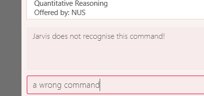

Jarvis was developed by AY1920-CS2103T-T10-1. We are a team based in the School of Computing, National University of Singapore.
Project Portfolio for Ryan Tan
About the Project
My team of 5 students in a Software Engineering module, including myself, was tasked with enhancing a program named AddressBook. AddressBook is a basic desktop application that features a Command Line Interface (CLI) style of input - meaning that a mouse need not be used for the application.
We chose to enhance AddressBook into a Student Lifestyle application named Jarvis. Jarvis is meant to be able to manage many aspects of a regular university student’s life - anywhere from finances to university course planning.
Shown below is the UI of Jarvis, showing my feature:

My role in the development of Jarvis was the Course Planner feature. This document illustrate the methods I’ve used to integrate this feature into Jarvis, along with the challenges I have faced and how I have overcome them, plus any other contributions I had in the entire project.
The link to the repository can be found here.
Summary of Contributions
This section shows a summary of coding, documentation, and other helpful contributions to this team project. The link to the code I have contributed can be found at this link.
Course Planner
The feature I have provided within Jarvis is a Course Planner - using this feature you are able to plan out, look up and check information about any course currently offered within the National University of Singapore. This is one of the big features (out of 4) of Jarvis.
Since Jarvis is an integrated system with the focus of a Student Lifestyle tool targeted towards University students, streamlining course planning was determined to be a natural feature that this application should provide. The Course Planner allows an NUS student to keep track of their courses that they have taken and the courses they are taking, so that they can make more informed choices on the courses they wish to taken.
The implementation of this feature was not as simple as expected. This is due to:
-
Implementing a new tree data structure that I had not learnt before in previous modules. Thus, research had to be done on how to create this data structure. I eventually had to come up with my own implementation using the new knowledge gained from my research.
-
Management of the large amount of data from University courses proved challenging as many approaches could be taken to manage the data. This is mainly in terms of the data’s storage and retrieval while the app was running.
A poor solution could result in program freezes in the order of seconds, which would be detrimental to the user experience. Eventually, a reasonable solution to this problem of data storage and retrieval was reached after considering many avenues, that was relatively neat and had good performance.
Credits
-
Majority of the data used inside the Course Planner was downloaded directly from NUSMods.
-
Processing of
.jsonfiles were handled by the Jackson JSON API.
Other Contributions
This sums up my contributes to the project that were not directly related to my main feature - Course Planner.
-
Developer Guide #156 #159 #169 #177 #178 #349 #365
I was in charge of the Developer Guide, and hence did most of the formatting, editing and management of the document.
-
Testability and Code Quality
-
Refactored a
ModelStubclass that was being duplicated throughout the codebase #131ModelStubis a stub class used for testing. As we developed our own features, any updates toModelhad to be reflected inModelStub. Since we had five different features, each changingModel, we had to edit every instance ofModelStubin the code. Eventually, it got very tiresome and I removed all static inner-class instances and refactored it into its own class for easier reuse. -
Added additional compiler flags into our
gradlebuild #108.This was added as some of us had pushed code that was using deprecated API. This change allowed the compiler to warn us if we were using deprecated API, along with any warnings related to Java Generics.
-
Refactored
CliSyntax#110CliSyntaxis a class used to indicate different inputs into a command. So, in a command with the syntaxadd n/NAME p/PHONE_NUMBER,n/andp/are considered "CLI Syntax". Our team faced an issue where we had to reuse some syntax since similar ones thematically fit into our own individual features. For easier referencing and to avoid clashes, the team lead asked me to refactor the relevant constants into their own static classes for easy importing.
-
-
User Interface
-
Implemented switching using
<TAB>b832 4d9fSince Jarvis primarily uses the keyboard, I implemented tab-switching using the keyboard with the
<TAB>key, instead of having to either type a command or use the mouse. I felt that this made the user experience more seamless and in line with the target audience’s (fast typists used to a Command Line Interface) preferences. -
Implemented Command-Box highlighting
The colour scheme we had gone with in Jarvis did not allow us to highlight the text of wrong commands without it looking unappealing. Thus, I made the UI show a red highlighted box instead, as shown below:
Figure 2. Command Box Highlighting with Wrong Command -
Implemented Styling for User Interface #330
Along with the help of another team member who worked on the layout, I did the styling seen in the application - such as the way the tabs look, the colour scheme of individual components and general look and feel of the UI.
-
Contributions to User Guide
We were put in charge of our own sections of the User Guide content while another member had styled and verified the cohesiveness of the User Guide as a whole. The following is my section of the User Guide:
Course Planner
Unable to keep track of what modules you have been taking? Need to quickly know what your CAP is? Want to know how far you are in determining your focus areas? Jarvis has a feature just for you! The Course Planner serves to solve these problems.
Thoroughly integrated with NUSMods (that we as NUS students often use to plan our timetables) you will be able to consolidate all the courses you have taken in NUS to date, as well as figure out what courses you could possible take in the future.
Let’s see how the Course Planner looks like:

The default display for the Course Planner is a list of courses on the left and an empty Result Box on the right - as shown in Figure 12. This box will display different pieces of information depending on the commands entered.
Let’s see what the Course Planner can do:
Add a course: add-course
To get started, you can add specific course(s) to your list. Jarvis is able to add multiple courses at one go.
Format: add-course c/COURSECODE…
where COURSECODE is the course code of the {nusmods-modules}[NUS course] you
wish to add.
Example
add-course c/CS1010 add-course c/CS1010 c/CS2030 c/CS2040
Add a course with grades: add-course [v2.0]
If you wish, you may add a course that has a grade attached to it. This is to facilitate Jarvis' understanding of the courses you have already taken. Jarvis will use such information in the calculation of your CAP (Cumulative Average Point).
Format: add-course c/COURSECODE g/GRADE [c/COURSECODE g/GRADE]…
where GRADE is any
valid NUS grade.
Example
add-course c/CS1010 g/B+ add-course c/CS2040 g/A+ c/CS2100 g/B- c/MA1521 g/B+
Every GRADE is tethered to the preceding COURSECODE, so the parameters to
this command must be entered in the specified order!
|
Delete a course: delete-course
You can easily delete a course from your list - either by the index of the course in the list, or by its course code.
Format: delete-course {c/COURSECODE | INDEX}
Example
delete-course c/CS1010 delete-course 2
Look up a course’s information: lookup
You can also retrieve information about a specific course - such as course title, course code, number of credits and what the course is about. The information will be displayed in the result box on the right of the Course Planner, as shown below:

Any information you will want to know about any course is shown within the result box.
Format: lookup c/COURSECODE
Example
lookup c/CS1010
Check a course: check
If you are not sure if you can take a certain course next semester, this
feature will come in handy. Simply check the course in question. The result
is dependent on the courses you have added to your list, and Jarvis will
display a very helpful tree similar to NUSMods to show you what requirements
you need for each course.

In this case, the user is unable to take the course ST23344 as he has not filled any of the requirements.
Format: check c/COURSECODE
Example
check c/CS1010
Check your CAP: cap [v2.0]
If you wish to check your current CAP (Cumulative Average Point), you can do
so with the command cap. Jarvis assumes that any course that does not have
a grade attached to it in your list have not, or are currently being taken
and will not be counted towards you CAP.
Information on the CAP system can be found here.
Format: cap
Contributions to Developer Guide
As stated above, after the assigning of roles amongst the team, I was put in charge of the Developer Guide. While each person wrote their own sections, I was to audit them to ensure that they conformed to the specified format so as to give the document structure and cohesion.
PlantUML
I was initially in charge of drawing diagrams using PlantUML. This was handed over to another person further along the project. These are some of the diagrams I drew:
Course Planner feature
Overview
The Course Planner feature allows the user to track what courses they
-
Have taken
-
Are taking, and
-
Want to take
The feature offers updated information on courses offered by NUS, along with convenient add, delete and check operations on the user’s course list.
The Course Planner Model
The CoursePlanner class within the model provides an interface between the
components of the feature and the updating of the overall model. Like other
features, Model is associated with the course planner feature via
implementing CoursePlannerModel, from which Model implements.
Some of the more interesting methods (i.e not simple accessor and mutator
methods) within CoursePlanner are shown below:
-
Model#addCourse(Course)- Adds a course to the user’s list -
Model#deleteCourse(Course)- Deletes the course from the user’s list -
Model#lookUpCourse(Course)- Looks up information about the given course -
Model#checkCourse(Course)- Checks if the user can take this course -
Model#hasCourse(Course)- Checks if the given course exists in the user’s list
The list of courses of the user is stored internally using a UniqueCourseList
object, providing an abstraction with add and delete operations that
are called by CoursePlanner and its model.
The text that is displayed to the user within the UI showing information about
the Course Planner is abstracted within the course text display. This is a
simple class that uses Observable to track changes to it as the program runs.
The class abstracts some operations on this string such as setting, getting,
printing to a displayable form, etc.
Shown below is the Class diagram for the Course Planner.

Every Course has a few non-nullable attributes - Title, CourseCode,
CourseCredit, Faculty and Description. The other three (PrereqTree,
Preclusion and FulfillRequirements) are not required to exist as it
depends on the course’s data.
Design Considerations
As explained above, the CoursePlanner is implemented by Model and follows
much of the extendable OOP solution implemented within Jarvis that is common
to the other features.
This section will discuss about the individual components that were created for this feature, the alternative Software Engineering design choices for each one, and our thought process of the eventual choices made for each component.
Course Datasets
Course data-sets are taken directly from the {nus-mods-api}[NUSMods API]. These
data-sets are stored using the .json file format on NUSMod’s API. Since
Jarvis already heavily uses the Jackson JSON API, we have opted to store all
course data within Jarvis in their original form. Therefore, all data is read
directly from .json files.
| NUSMods is a popular website officially affiliated with NUS, where students are able to look up information about courses and plan their school timetable. This makes its data-set a reliable source of course information. |
Each course, and their data, are given its own file. These files are laid out
in /modinfo within /resources to be easily accessible by the program.
A sample, valid AB1234.json is given below for a fictional course AB1234.
{
"courseCode": "AB1234",
"courseCredit": "4",]
"description": "Course description for AB1234.",
"faculty": "A Faculty in NUS",
"fulfillRequirements": [ "AB2234" ],
"preclusion": "AB1231, AB1232",
"prereqTree": {
"and": [
{
"or": [
"CD1111",
"XY2222"
]
},
"EF3333"
]
},
"title": "Course AB1234's title"
}
As explained above, certain attributes of a Course are non-nullable. This
choice was made due to the actual course datasets -
This also means that every semester, all datasets must be pre-processed before being deployed into the application. It is quite simple to create a script to do the pre-processing, and is such a good trade-off as opposed to manually checking every field when pulling data from a course file.
Storing of Course Datasets
A decision we had to make concerned the way we would store the data to be referenced on runtime. Considering the multiple options, two stood out as being the most feasible within Jarvis.
-
Option 1: Storing every course in a single, large JSON file
This makes file handling easier to manage. Every course can be found in single file and the code need not deal with many
FileNotFoundExceptionorIOExceptionupon lookup, as the file is guaranteed to exist.The trade-off is that a large file will be difficult to view for a developer. It will also have slow performance as the entire file would have to be processed to look up one course.
The developer may also:
-
Store the whole file in a buffer for faster lookup, but this may be time-consuming and troublesome to implement, especially due to the memory consumption, or:
-
Process the whole file and create all
Courseobjects upon start-up. However, due to the large number of course files (11000+), this may also have significant memory overhead.
-
-
Option 2: Storing each course as its own file
This allows for fast lookup as the contents of all 11000+ course files of data do not need to be scanned directly. Fast string concatenation of file paths directly to the relevant
.jsonfile can be used instead.Unfortunately, this also makes the data-set difficult to manage. If we want to modify the data-set in any way, a script will have to be written to process every file in the data-set. Additionally, every lookup must deal with file-related exceptions.
Our Thoughts
We decided to go with Option 2, as once the files were downloaded and processed, there was no need to modify them any further. Processing, or loading inside a buffer, of very large text files are likely to significantly hamper performance for little benefit. Manual lookup information about a specific course during development is also much easier with such a method.
And-Or Tree
The AndOrTree<R> is a tree data structure served by the util/andor package
that provides an abstraction for processing the prerequisite tree. The
prerequisite tree (henceforth referred to as prereqTree) is an attribute of a
Course that is available in the NUSMod’s course data-set, the data comes in
the form of a String and will be covered shortly.
Before covering the tree itself, it would be helpful to cover its building blocks.
The AndOrNode Class
Each node in the tree of type R is represented by an AndOrNode<R>. Every
node has a List<AndOrNode<R>>, to be used in checking the truth condition
of the tree, and every node is either an AndNode, OrNode or DataNode
node. This determines the conditional used to check the truth condition of a
node.
The truth condition of a node is determined using the method:
boolean fulfills(Collection<R>). This checks the truth condition of the node
based on the following predicates:
-
The node is an
AndNodeAny subset of elements in
Collection<R>must match all children of this node. -
The node is an
OrNodeAny element in
Collection<R>must match at least one of the children of this node. -
The node is a
DataNodeAny element in
Collection<R>must match the data stored in this node.
So, an AndNode<String> with children {"1", "2", "3"} will match true
against a collection of {"1", "2", "3", "4"} and false against a collection
of {"2", "3"}.
Node Creation
The following class diagram demonstrates the structure of the abstract class
AndOrNode and its sub-classes.

Using this format, a static method of the form AndOrNode#createNode(T,String)
is able to construct all instances of its sub-class, thus the caller will not
need to know of the different type of nodes.
The AndOrTree Class
The following are public methods in AndOrTree.
-
buildTree(String, Function<String, ? extends R>)Builds a tree from the given jsonString.
Functionis a mapper that processes aStringand returns a value of typeR, whereRis the type of data stored by each node in the tree. -
fulfills(Collection<R>)Checks if the given
Collectionof typeRfulfills the condition specified by this tree.AndOrNodehas its own correspondingfulfillthat checks its children or data againstCollection.
Due to the arbitrary ordering of the tree, insert() and delete() operations
commonly found in implementations of ordered trees are difficult to implement.
Instead, the tree is fully created upon the call to buildTree() and is then
enforced to be immutable once built. This is reflected in the class' lack of
mutator methods.
Building of the AndOrTree
As mentioned above, we use the prereqTree attribute in order to build the
tree. An example of a processable json string is as such:
"prereqTree": {
"and": [
{
"or": [
"CD1111",
"XY2222"
]
},
"EF3333"
]
}
This can be read as:
To take AB1234, you require... | └ all of ├── one of | ├─ "CD1111" | └─ "XY2222" └─ "EF3333"
This means that to take the fictional course AB1234, a user would have to
complete EF3333, and either CD1111 or XY2222.
The buildTree() method takes in the json string as an input. The Jackson
API uses this string to create a root JsonNode object, and the tree is built
recursively from the root. The sequence diagram of the tree building process is
shown below:

The class looks at each node - checks if its is an Object, Array or a
String, and does the appropriate actions and function calls.
Other ways of building the tree can be easily extended by overloading the
buildTree method. However, this will not override the immutable properties of
the tree.
Dependency on Course
AndOrTree posed some difficulty for us, in the decision to couple the
implementation of AndOrTree with Course. This is because the tree will
only ever be used by the Course Planner within the program, and thus it is
not required to implement the tree using generics. However, this would increase
coupling between AndOrTree and Course, which is unfavourable for testing.
Below are our considerations in implementing this data structure:
-
Option 1: Couple
AndOrTreetoCourseThis means that there is no need to pass any mapper function into the
buildTree()method as the class does not need to know how to map fromStringtoR. This also makes handling mapping exceptions easier as they can be handled directly byCourseinstead of byAndOrTree.However, this increases coupling between the tree and
Course, resulting in the correctness of theAndOrTreeclass being dependent onCourseas there is no way to stub it. The tree will also only be locked toCourseand is non-extendable. -
Option 2: Using Generics
This makes the tree reusable in the future. The tree will also be able to store any data-type which allows for easier unit testing, since it won’t be dependent on the correctness of
Course. Instead well-tested libraries such as Java’sStringAPI can be used to test the class instead.However, due to how the tree is built (i.e from a json string), a mapper function must be passed into the
buildTree()method to process the string in each node to the generic type of the tree. The function is of the typeFunction<String, ? extends R>, for a tree of typeR.
Our Thoughts
Due to its benefits far outweighing its disadvantages, we picked the second
choice of using generics. While extendability and re-usability of the class is
a nice bonus, the decrease in coupling and increase in testability was the
deciding factor in choosing between these two approaches. Furthermore, behavior
of the building of the tree can be easily extended by either inheritance, or
overloading of the buildTree() method.
Implementation
With the significant individual components covered, the process of the
Course Planner can be discussed. We will be covering the check command
since the rest of the commands are either simple insert and delete operations
on a list, or retrieving data from a file. This command allows us to see the
full extent of back-end to front-end operations on the Course Planner.
The check operation allows users to check if they are able to take a certain
course. Whether the user can take the course depends on the courses in their
list. The following is the activity diagram of general overview of the process
when the user types a check command.

Additionally, the following below shows the sequence diagram of how the program checks if the user satisfies the course’s prerequisites.